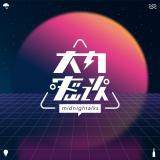

荔枝，是中国UGC音频社区。 荔枝以“帮助人们展现自己的声音才华”为使命，重塑了传统音频行业中原本割裂的音频制作、存储、分发产业链， 实现了每一个人都可以通过手机一站式进行创造、存储、分享和实时互动，让人们“用声音记录和分享生活”， 由此积累了大量的用户和内容创作者。截至2020年第三季度，荔枝移动端月均活跃用户达到5620万，月活跃内容创作者的数量达到615万，用户累计上传播客内容数达到2.34亿，季度新增播客数量超过1900万，月均总互动数达32亿次。此外，荔枝也首次实现了上市后在非美国通用会计准则口径下的季度盈利。
频道推荐--My favorites
 「大内密谈Midnightalks」是一档由“深夜谈谈Midnight Network”出品的播客节目。
密而不宣，无所不谈。电台创立于2013年6月6号。电台有相征、詹华、郭小寒、贺愉、王涛、宋晓辉、徐图（徐小兔）、刘琬乔（小乔）、倪兵，唐霜共10大主播组成的主播阵容。
《读者》读者天元以建设互联网时代的文化新品牌——读者新媒体为己任，如今已打造了 拥有3800万粘性粉丝的移动互联网新媒体矩阵平台、文化电商平台和知识付费平台。未来读者新媒体力争在新知识经济时代， 打造学习型组织，实现企业基因传承，产品及组织形态再造，并将“智慧阅读”的社会基因和思想基因突破企业边界，影响到行业和社会， 实现终端付费用户的指数级增长，让读者成为一所终身大学——读者大学，用更好的知识服务引领亿万读者智慧学习、终身成长。